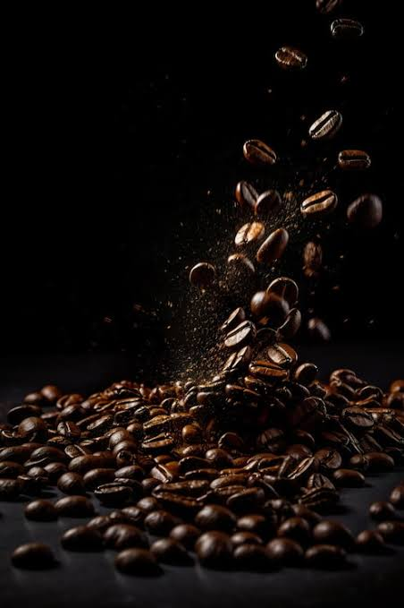

Kaffee gibt es in verschiedenen Sorten. Die bekanntesten sind Arabica und Robusta. Daneben gibt es auch seltenere Sorten wie Liberica und Excelsa. Sie unterscheiden sich zum Beispiel im Geschmack, im Koffeingehalt und in ihren Anbaubedingungen.
ArabicaArabica ist eine der bekanntesten Kaffeearten. Sie hat einen milden und aromatischen Geschmack. Arabica enthält weniger Koffein als Robusta. RobustaRobusta hat einen kräftigen und eher bitteren Geschmack. Sie enthält mehr Koffein als Arabica. Die Pflanze ist widerstandsfähiger und wächst auch bei höheren Temperaturen. LibericaLiberica ist eine seltenere Kaffeeart. Sie hat große Kaffeebohnen und einen kräftigen, besonderen Geschmack. Sie wird vor allem in einigen tropischen Regionen angebaut. ExcelsaExcelsa ist ebenfalls eher selten. Ihr Geschmack wird oft als fruchtig und leicht säuerlich beschrieben. Sie wird häufig für Kaffeemischungen verwendet. |
 |
Vergleich der Kaffeesorten
| Kaffeesorte | Geschmack | Koffeingehalt | Besonderheit |
|---|---|---|---|
| Arabica | mild, aromatisch | weniger | sehr bekannt und verbreitet |
| Robusta | kräftig, eher bitter | mehr | widerstandsfähige Pflanze |
| Liberica | kräftig, besonders | unterschiedlich | große Kaffeebohnen |
| Excelsa | fruchtig, leicht säuerlich | unterschiedlich | eher selten |